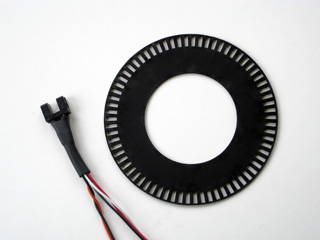

Examples - ExampleModules - Photointerrupter
Photointerrupter
A photointerrupter is more or less a simple light barrier. Mostly the
light source is an infrared-LED and the receiver is a photo-transistor.
Normally you want the status of the light barrier (covered-closed or
opened) directly mapped to a digital Low or High. But a simple
photo-transistor can also have states between Low and High.
To make sure you do not need to filter those value-range by software, it is advisable to use a receiver that includes a Schmitt trigger.
A Schmitt trigger does not only use a threshold to decide between Low
and High, it also implements a hysteresis that eliminates noise. The
important fact is, that a photointerrupter with Schmitt trigger output
will provide you a proper square-wave signal. For example GP1A53HR will
have this characteristics (search google).
wire a photointerrupter
Most photointerupters will not need much (<20mA) current. Therefor
they can be powered by the arduino-board. I use the following wiring
for the GP1A53HR:
| pinNo | pinDescription | connect |
| 1 | ir-LED Anode | via 470 Ohm Resistor to 5V - current limited to ~10mA |
| 2 | ir-LED Cathode | to Ground / 0V |
| 3 | receiver Vcc | to 5V |
| 4 | receiver Vo | to digital input / MicroController |
| 5 | receiver GND | to Ground / 0V |
photointerrupter code snippets
|  | A common usage for photointerrupters is to query, if a mechanical component has reached a specific position, or to count the pulses of an encoder wheel. |
The linked code examples will show how to count pulses. It is also
possible to use an external interrupt to stop a motor at an inital or
final position, or to detect a coin dropping through a slot.
How does the code look: Of course it is possible to
query the Photointerrupter status continuously within the main loop.
This approach is not very efficient because you occupy your CPU and you
might miss a very short timed event ( for example the dropping coin ) -
but to have a complete list here is an Example simple.
To have some script timed independent from your main loop, you can cause
a function to be called with signal-changes at some special input Pins.
This method is called external interrupts and can be accessed via the
arduino-function attachInterrupt.
This method is nice to react on single events (initial position of a
motor, the dropping coin or a switch). It still will consume some CPU
and will interrupt the execution of your main loop.Example interrupt
If you just want to count events, like the number of
stripes of an encoder wheel that passed by, you can use one of Arduinos
Timers/Counters and set them to use an external clock. Be aware of using
Timer0 which is used for some functions like delay() and millis().You
also have to take account, that each Timer is used to control two
PWM-Pins, using a Timer for something else will decrease the number of
PWM-Pins. You will find more information about timers in this article. Timer1 is a 16-Bit Timer - it can count from 0 to 65535. There are also 8-Bit Timers that only count from 0 to 255. This Example Timer1 shows, how to count pulses with Timer1 on a ATM168.
Example Project
In the Embossing Printer Project i made intensive use of photointerrupters.
Article by
Tom Pawlofsky Mai 2010
contact
pawlofsky–AT-arch-DOT-ethz-DOT-ch
please feel free to email any comments, misstakes or improvements.
this page is linked to: